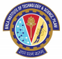

SHAUNAK SRIVASTAVA
Course : M.Sc. (Hons.) Mathematics and B.E. (Hons.) Electronics and Communication Engineering, 2022
Institute : BITS Pilani, KK Birla Goa Campus, India
Email : f20171024@goa.bits-pilani.ac.in
Mobile : +91-8105708179

Subjects / Electives | Discrete Mathematics, Linear Algebra, Mathematical Optimization, Numerical Analysis, Applied Stochastic Processes, Statistical Inferences and Applications, Probability and Statistics, Differential Equations ; |
Technical Proficiency | Python, C, C++, MASM; |
SUMMER INTERNSHIP / WORK EXPERIENCE |
Project Intern, Carraro India Pvt. Ltd.May 2019 - Jul 2019 |
PROJECTS |
Multi-Object Tracking - Computer Vision Link June 2020 - July 2020 Localization and Path Planning for Autonomous Vehicles - Mobile RoboticsAug 2018 - Dec 2018 Dynamic Hand Gesture Control using Deep Learning - Computer Vision Link Jul 2020 - Jul 2020 Ant Exploration using RL - Reinforcement Learning Link Nov 2020 - Nov 2020 Projects under Image Processing and Computer Vision Course - Computer VisionDec 2019 - Jan 2020 Projects under Deep Learning Specialization Course - Deep LearningMay 2020 - May 2020 Projects under Data Structures & Algorithms Course - Data Structures and AlgorthmsJun 2020 - Jul 2020 Voice Digitizer - Microprocessors and InterfacingMar 2020 - May 2020 The One Game - Computer ProgrammingNov 2016 - Jan 2017 |
POSITION OF RESPONSIBILITIES |
Core Member - Mime ClubAug 2019 - May 2020 President - MUN Club, CMR National Public SchoolJun 2016 - Mar 2017 |
EXTRA CURRICULAR ACTIVITIES |
Event OrganizationWorked for the Department of Sponsorship and Marketing to raise funds and manage on fest marketing for our cultural, technical and sports festivals. Acting and DirectionI have been active member for the Mime Club for the last three years and was a core member for the 2019-20 team. I was part of 7 productions as an actor and director. Apart from these, I have also been part of 2 short film productions. Sports and AthleticsWon several accolades in individual events such as sprints and long jump along with several team events like Football, Relay and Kho-Kho. |
AWARDS AND RECOGNITIONS |
4th State Rank in Math Olympiad | Silverzone Foundation |
CERTIFICATIONS | ||
CERTIFICATION | CERTIFYING AUTHORITY | DESCRIPTION |
Algorithms on Graphs | Coursera | Djikstra's Algorithm, Bellman-Ford, Kruskal's Algorithm |
Deep Learning Specialization | Coursera | Neural Networks, Hyper-parameter Tuning, CNNs, Sequence Models |
Algorithmic Toolbox | Coursera | Time Complexity, Greedy Algorithms, Dynamic Programming |
Data Structures | Coursera | Binary Search Tree, Priorty Queue, Hash Table, Stack, List |
COMPETITIONS |
Cottons Model United Nations - Aug, 2015 Secured the Best Position Paper Award. Sishu Griha Model United Nations - Jun, 2014 Secured the Best Position Paper Award. Indian Robotics Olympiad - Sep, 2013 Secured Third Position a the regional round and qualified to compete at the National Level. First Lego League - Jan, 2012 Awarded the Best Design for our Robot. |
SCHOLOARSHIPS |
National Talent Search Examination (NTSE)May 2015 |
LANGUAGES KNOWN |
English: Native proficiency Hindi: Native proficiency German: Elementary proficiency |